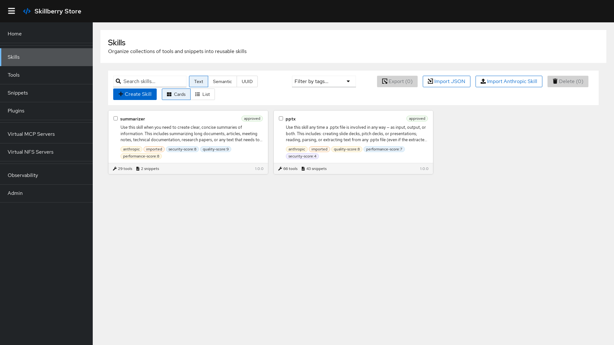

Manage · Execute · Organize · Publish
Skillberry Store is a central place to manage every tool your AI agents need. Upload once, execute anywhere, and manage everything from a single service — tools, skills, and snippets with semantic search, lifecycle management, virtual MCP servers, and a rich plugin ecosystem.
pip install skillberry-store
make docker-run # UI → :8002 · API docs → :8000/docsHighlights: the Skillberry Store UI in ~1 minute
Stop scattering tools across repos, gists, and one-off scripts. Register them once, then reach them from any MCP-compatible client — with search, versioning, and safe execution built in.
Add, update, delete, and version tools, skills, and snippets. Control state and visibility, organize with namespaces, and find anything with semantic or classic search.
Invoke tools with parameters inside a Docker (or Podman) sandbox. Isolated execution keeps agent-generated code from touching your host.
Expose tools as virtual MCP servers, mount skills as read-only filesystems over WebDAV/NFS, or route calls to external MCP backends. Works with Claude, Cursor, and any MCP client.
Shortlist tools and skills by meaning or by keyword across every resource in the store.
Label and organize skills, tools, and snippets for better categorization and filtering.
Expose a single skill's tools and snippets as a standalone MCP endpoint on its own port.
Mount a skill as a read-only WebDAV or NFSv3 filesystem — readable by any tool that can mount a drive.
Serve your tools as MCP, and consume/route tools from multiple external MCP servers.
Every REST operation is also an MCP tool at /control_sse for agentic workflows.
Store tools and skills in the filesystem or in GitHub repos via version-controlled hooks.
Prometheus metrics and OpenTelemetry traces for operational and behavioural analysis.
Extend the store with AI-powered generation, evaluation, security, import, and optimization — no core changes.
Built with React and PatternFly, the UI ships with the backend — manage tools, skills, snippets, VMCP and vNFS servers, and plugins visually.

Install, run with Docker, open the UI, and import your first skills.
Read → CapabilitiesTools, skills, snippets, search, VMCP, vNFS, and observability.
Read → Ecosystem16 installable plugins for creation, evaluation, security, and import.
Read → TerminalThe sbs command — every API operation from your shell.
Install with pip, start with Docker, and you have a searchable, executable, MCP-ready skill library running locally.
pip install skillberry-store
make docker-run